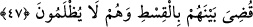

ONLARIN DÖNÜŞÜ
BİZEDİR
45. Onları bir araya toplayacağı gün, sanki onlar sadece gündüzün görüşüp
tanıştıkları bir saat kadar (dünyada) kalmış gibi olurlar. Allah’ın huzûruna çıkmayı
yalanlayıp doğru yola gelmemiş olanlar, en büyük ziyâna uğramışlardır.
46. Eğer onları tehdit ettiğimiz (azâbın) bir kısmını sana (dünyada iken)
gösterirsek (ne âlâ!); yok eğer (göstermeden) seni vefat ettirsek nihâyet onların
dönüşü de bizedir. Sonra Allah onların yapmakta olduklarına da şâhittir.
47. Her ümmetin bir peygamberi vardır. Peygamberleri gelince aralarında
adâletle hükmolunur, onlara hiç haksızlık edilmez.
“Onları”, Mekke kâfirlerini “bir araya toplayacağı gün,” Yani ‘Ey Muhammed!
Onlara, Allah’ın kendilerini haşr edip bir araya getireceği kıyamet gününü hatırlat ya da
onları bugünden korkut.” “sanki onlar sadece” dünyada iken birbirleriyle tanıştıkları
gibi “gündüzün görüşüp tanıştıkları bir saat kadar” yani gündüzün çok az bir süresi
kadar; - bu mesel çok kısa bir müddeti belirtmek için kullanılır- dünyada veya
kabirlerinde “kalmış gibi olurlar.”
Bu kısa sürenin gündüzleyin geçen bir süre olduğu özellikle belirtilmiştir. Çünkü
gündüzün saatleri gecenin saatlerinden daha çok bilinir.
Bu cümle teşbih cümlesidir. Yâni onları, sanki çok az bir süre kalan kişilere benzer
bir halde haşrederiz. Onlar gördükleri şeyin dehşetinden dolayı, dünyada kaldıkları
süreyi kısa görürler. İnsanın korkusu büyüdükçe âşikar şeyleri bile unutuverir.
Zâhidî Tefsiri’nde şöyle denilir: Mu‘tezile mezhebi kabirde azab olmayacağı
iddialarını bu âyetten istidlal etmişlerdir. Onlara göre eğer kâfirler kabirde azab
edilmiş olsaydı bu uzun müddet onlara bir saat görünmezdi. Onlara şöyle cevap
verilmiştir: Bu durum, kıyâmet hallerinin korkularının ve şiddetinin zorluğuna göredir.
Onun yanında kabir azabının müddeti bir saat gibi görünür.
Fakir (Bursevî) der ki: Kâfirler dünyada kalma sürelerini az bulacaklardır. Çünkü
onlar zâhirî bir nimet içinde idiler. Bu nimet içindeki hayat ise rüzgâr gibi geçer.